Continuation and stability of steady states (equilibria)
(c) DDE-BIFTOOL v. 3.1.1(75), 31/12/2014
Once the user-defined functions are prepared, DDE-Biftool can compute and continue equilibria of the DDE, and compute their linearized stability, thus detecting local bifurcations. This demo requires demo1_funcs.html to have run beforehand.
Contents
- Initial guess for steady state
- Linear stability of initial equilibrium
- Ask for roots with more negative real part
- Figures: Spectrum of equilibrium
- Initialize branch of trivial equilibria
- Extend and continue branch of trivial equilibria
- Stability of branch of equilibria
- Figures: Stability of equilibria
- Save and continue with Hopf bifurcations: demo1_hopf.html
%#ok<*ASGLU,*NOPTS,*NASGU> %
Initial guess for steady state
It is clear that the neuron DDE has a steady state solution 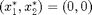 for all values of the parameters. We define a first steady state solution using the parameter values 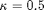, 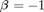, 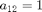, 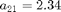, 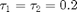 and 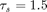. Remember that we chose par 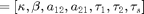.
stst.kind='stst';
stst.parameter=[1/2, -1, 1, 2.34, 0.2, 0.2, 1.5];
stst.x=[0;0]
stst =
kind: 'stst'
parameter: [0.5 -1 1 2.34 0.2 0.2 1.5]
x: [2x1 double]
Linear stability of initial equilibrium
We get default point method parameters and correct the point, which, being already a correct solution, remains unchanged. Computing and plotting stability of the corrected point reveals it has one unstable real mode, see figure.
flag_newhheur=1; % flag_newhheur=1 is the default choice if this argument is omitted method=df_mthod(funcs,'stst',flag_newhheur); method.stability.minimal_real_part=-1 [stst,success]=p_correc(funcs,stst,[],[],method.point) % compute its stability: stst.stability=p_stabil(funcs,stst,method.stability) figure(1); clf; p_splot(stst); % plot its stability:
method =
continuation: [1x1 struct]
bifurcation: [1x1 struct]
point: [1x1 struct]
stability: [1x1 struct]
stst =
kind: 'stst'
parameter: [0.5 -1 1 2.34 0.2 0.2 1.5]
x: [2x1 double]
success =
1
stst =
kind: 'stst'
parameter: [0.5 -1 1 2.34 0.2 0.2 1.5]
x: [2x1 double]
stability: [1x1 struct]
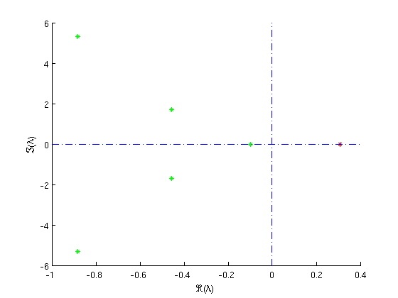 Ask for roots with more negative real part
In both figures, approximations  and corrections are nearly indistinguishable.
and corrections are nearly indistinguishable.
method.stability.minimal_real_part=-2; stst.stability=p_stabil(funcs,stst,method.stability); % recompute stability: figure(2); clf; p_splot(stst); % replot stability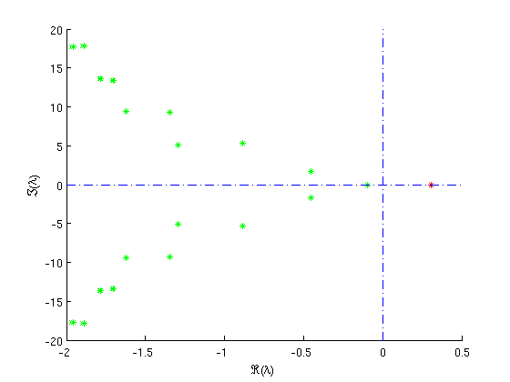
Figures: Spectrum of equilibrium
Approximated and corrected roots of the characteristic equation of neuron system at its steady state solution . Real parts computed up to 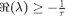 (top), 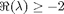 (bottom).
Initialize branch of trivial equilibria
We will use this point as a first point to compute a branch of steady state solutions. First, we obtain an empty branch with free parameter 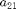, limited by 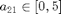 and 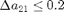 between points.
% get an empty branch with ind_a21 as a free parameter: branch1=df_brnch(funcs,ind_a21,'stst') branch1.parameter branch1.parameter.min_bound % set bounds for continuation parameter branch1.parameter.min_bound(1,:)=[ind_a21 0]; branch1.parameter.max_bound(1,:)=[ind_a21 5]; branch1.parameter.max_step(1,:)=[ind_a21 0.2]; % use stst as a first branch point: branch1.point=stst;
branch1 =
method: [1x1 struct]
parameter: [1x1 struct]
point: []
ans =
free: 4
min_bound: [3x2 double]
max_bound: []
max_step: []
ans =
5 0
6 0
7 0
Extend and continue branch of trivial equilibria
To obtain a second starting point we change parameter value slightly and correct again.Because we know how the branch of steady state solutions continued in looks like (it is constant at ) we disable plotting during continuation by setting the corresponding continuation method parameter to zero.
stst.parameter(ind_a21)=stst.parameter(ind_a21)+0.1; [stst,success]=p_correc(funcs,stst,[],[],method.point) % use as a second branch point: branch1.point(2)=stst; branch1.method.continuation.plot=0; % continue in one direction: [branch1,s,f,r]=br_contn(funcs,branch1,100) % turn the branch around: branch1=br_rvers(branch1); % continue in the other direction: [branch1,s,f,r]=br_contn(funcs,branch1,100)
stst =
kind: 'stst'
parameter: [0.5 -1 1 2.44 0.2 0.2 1.5]
x: [2x1 double]
stability: []
success =
1
BR_CONTN warning: boundary hit.
branch1 =
method: [1x1 struct]
parameter: [1x1 struct]
point: [1x16 struct]
s =
15
f =
0
r =
0
BR_CONTN warning: boundary hit.
branch1 =
...Stability of branch of equilibria
During continuation, sixteen points were successfully computed () before the right boundary 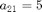 was hit (signalled by a warning). No corrections failed () and no computed points were later rejected (). Reversing the order of the branch points allows to continue to the left.
After obtaining suitable measure structures we plot the real part of the approximated and corrected roots of the characteristic equation along the branch, (see figure). Notice the strange behaviour (coinciding of several complex pairs of roots) at 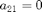. At this parameter value one of the couplings between the neurons is broken. In fact, for , the evolution of the second component is independent of the evolution of the first.
branch1.method.stability.minimal_real_part=-2; branch1=br_stabl(funcs,branch1,0,0); % obtain suitable scalar measures to plot stability along branch: [xm,ym]=df_measr(1,branch1) figure(3); clf; br_plot(branch1,xm,ym,'b'); % plot stability along branch: ym.subfield='l0'; br_plot(branch1,xm,ym,'c'); plot([0 5],[0 0],'-.'); axis([0 5 -2 1.5]); xlabel('a21');ylabel('\Re\lambda'); % plot stability versus point number: figure(4); clf; br_plot(branch1,[],ym,'b'); br_plot(branch1,[],ym,'b.'); plot([0 30],[0 0],'-.'); xlabel('point number along branch');ylabel('\Re(\lambda)');
xm =
field: 'parameter'
subfield: ''
row: 1
col: 4
func: ''
ym =
field: 'stability'
subfield: 'l1'
row: 'all'
col: 1
func: 'real'
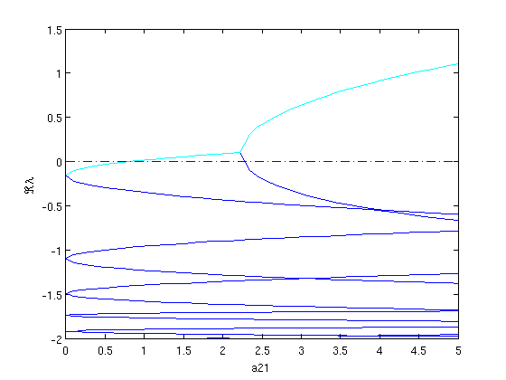 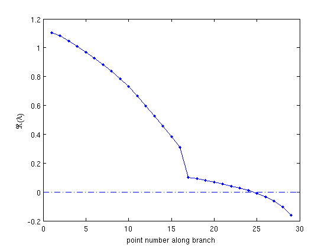 Figures: Stability of equilibria
Real parts of the approximated (top) and corrected (top,bottom) roots of the characteristic equation versus (top) respectively the point number along the branch (bottom).
Save and continue with Hopf bifurcations: demo1_hopf.html
save('demo1_stst_results.mat');